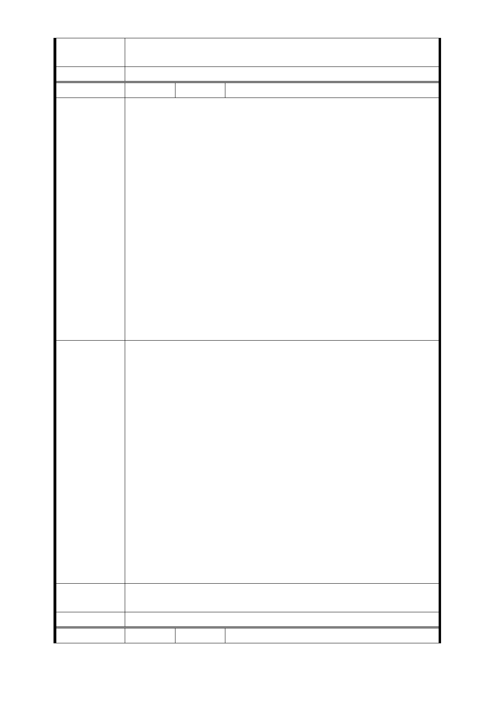

市府回應
意見
同編號捷五－1、捷五－3、捷五－4 回應意見。
委員會決議 同編號交一－1 委員會決議。
編 號 捷五-47 陳情人 廖○足
一、本基地為五樓之老舊公寓，郝市長承諾市民室內一坪換
一坪，並多一個車位之方式獎勵辦理都市更新。而本基地為
配合政府公共政策開闢捷運出口，但捷運聯台開發地主提供
土地配合市府政策，卻反而造成地主分到面積比單純都市更
新更少，且捷運出口及捷運設施勢必犧牲部分都更可取得之
獎勵容積項目，因此應給予更高容積獎勵。
二、本基地為私有地且地面上有建物，市政府沒有貢獻土地
卻又要再與私地主共享獎勵面積，實在沒道理，何況地主分
陳 情 理 由 得部分還需分給投資者。因此市政府不應分配獎勵面積，才
能彌補解決地主分坪不足的損害，地主強烈要求分回原居住
之室內面積，實踐市長一坪換一坪之政見承諾，以鼓勵本捷
運聯合開發內各地主參與聯開及都市更新創造市容再生、環
境永續與市民生計三贏！建請捷運局將心比心替居民著想。
三、因地主原已開始規劃更新。如由捷運局完全主導開發，
則地主無法參與，無法清楚知道分得坪數、價值等相關細節
，則參與聯開意願低，疑慮多。如由地主共同委託實施者，
或自組更新會，住戶可以全程參與，開發阻力較小。
一、比照商業區，提高法定容積率為 360 ％。
二、捷運獎勸、都市計劃獎勵應提高至法定容積之兩倍。
三、基地總開發容積以法定容積之三倍為上限。基地總開發
容積包含捷運獎勵容積、都市計劃獎勵容積、都市更新獎勵
容積及都市計劃容積移轉等。
四、捷運獎勵及都市計劃獎勵面積應全部歸地主，市政府不
得與地主平分 1/2。
五、依大眾捷運土開辦法。應特例允許；本基地內除國有及
建 議 辦 法 市有地外，如基地內私地主有 2/ 3 以上地主共同委託都市更
新實施者時，捷運局應優先採用地主委託之實施者為投資人
。
六、市府為一體，施政應完整評估對市民最有利之方案提出
，現有地上建物請都發局、都市更新處依更新權利價值估算
，納入後續辦理都更地主應分回之權利值，不應任由捷運局
以現行公共建設拆遷補償費用方式草草辦理，損害地主權益
，應依中央法規標準法之精神採有利於民眾之計算方式辦理
。
市府回應
意見
同編號捷五－1 回應意見。
委員會決議 同編號交一－1 委員會決議。
編 號 捷五-48 陳情人 溫○翰
- 86 -